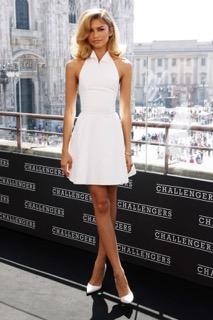

Sabrina Carpenter

Sabrina Carpenter's album "emails I can’t send" deeply resonates with Cayleigh, particularly the track "decode." In this song she speaks about how she struggles to accept situations that are out of her control. Cayleigh resonated with this song because of her own struggles with overanalyzing situations that are out of her control and having it take a huge spot in her mind. Cayleigh found Carpenter's album very inspiring because of her ability to communicate her emotions in such a beautiful way showcasing her raw vulnerability through her music. Her ability to connect with others on an emotional level through her music is comforting to know how she can articulate her emotions that many find relatable.
Zendaya

Cayleigh finds Zendaya’s evolution from a Disney actress to a movie star and fashion icon as inspiring. Her red carpet and press tour looks for Challengers showcase elegance and creativity in the way that it reflects her character’s persona. Her Roberto Cavalli black dress with a gold spine is one of Cayleigh's favorites of hers, where she subtly nods to a villian in Spiderman: No Way Home. Zendaya’s fashion sense encourages Cayleigh to embrace her own unique style while staying true to herself.
Crazy Rich Asians
and To All the Boys I've Loved Before
The films “Crazy Rich Asians” and “To All the Boys I’ve Loved Before” are a comfort and inspiration to Cayleigh. These films had a pivotal part in her growing up because it wasn’t often that she saw a female Asian American as the lead protagonist in a film. Seeing characters who similarly reflect her own cultural background and experiences allowed her to feel seen and understood. The films brought up a sense of pride and representation that she didn’t realize was missing in the mainstream media while growing up in the United States.